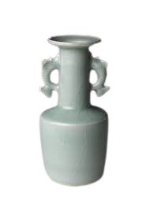
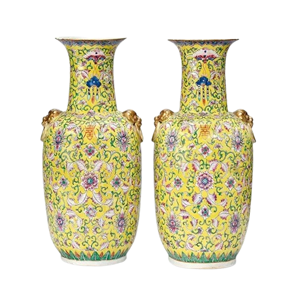

Vase Timeline


1127 to 1279
Japanese Tea Ceremony Vase
Vases of this type were especially popular in Japan, where they were sometimes used in the tea ceremony.
16th century
European Ceramic Vase from Deruta
The vase, which was made in the city of Deruta, illustrates two main influences on European ceramic design.
18th century
English Delft Vase Gifted to Queen
English Delft vase, gifted to the queen in the 18th century.

19th century
Famille Rose Chinese Vases
The vases are famille rose—a group of Chinese porcelains painted with shades of opaque pink overglaze.
20th century
Small Contemporary Posy Jar
Small Contemporary Posy Jar, English, Art Glass, Baluster Urn, Flower Vase.